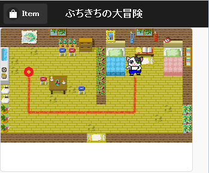

マップの表示と同じような方法で、大きな画像の一部分を表示しています。 画像の表示開始位置を少しずつ変えて、歩いているように見せています。
(キャラクター画像は1枚の画像です。)
キャラクターが歩く方向について、プログラム内部では、
0:下, 1:左, 2:右, 3:上
という決めごとをしています。
実は、これはとても便利なのです。
逆向きを表現したい時、現在の方向を変数 D とすると、
逆向き = 3 - D
という式で求める事が出来ます。
画面上の指定した位置までキャラクターを移動させるという処理を行なっています。 進むことが出来ない壁などをちゃんと避けて、目的の場所まで移動します。
JavaScriptのプログラム内でA*(エースター)というアルゴリズムを使用しています。